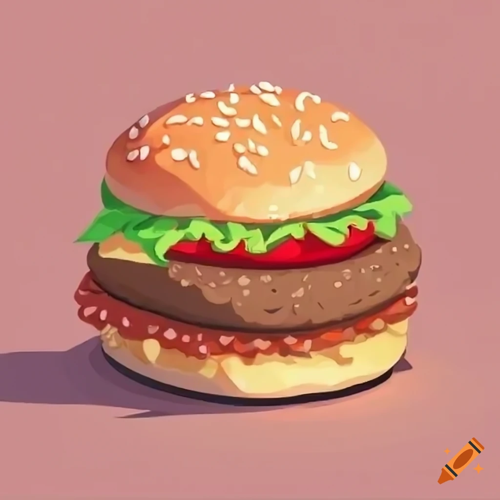

Burger

Description
Burgers are sandwiches that consist of circular buns, a patty, and vegetables
Ingredients
- Ground beef (or other protein, such as turkey or veggie patties)
- Burger buns
- Lettuce, tomato, onion
Steps
- Preheat a grill or skillet over medium-high heat.
- Season the ground beef with salt and pepper, then shape it into patties.
- Cook the patties for about 4-5 minutes on each side, or until they reach your desired level of doneness. Optional: Add cheese slices during the last minute of cooking for a cheeseburger.